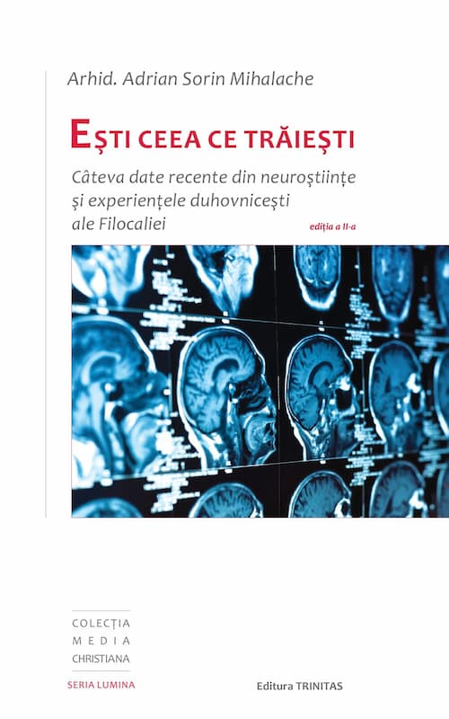

Așa cum prea bine se observă, există un interes atotprezent pentru a afla opinia oamenilor de știință în orice privință, de la galaxiile de care ne despart mii de ani lumină, până la subiectele pe care le întâlnim zilnic: noile produse ale tehnicii, sănătate, nutriție, dezvoltare personală, socială etc. De multe ori auzim că lucrurile stau așa sau altminteri pentru că „cercetătorii de la Universitatea X au observat că…”. Desigur, există „cercetări” care duc uneori această activitate foarte importantă în derizoriu, „descoperind” ceea ce aproape toată lumea știe, dar nu ele ne interesează în textul de față.
Încerc, în schimb, să atrag atenția asupra unei cărți ce satisface atât curiozitatea celor care vor să fie la curent cu noile descoperiri științifice despre comportamentul uman, cât și dorința semenilor de a-și îmbunătăți realmente viața pe baza a ceea ce ei consideră a fi solid, confirmat de experimente și studii serioase. Am în vedere lucrarea semnată de Arhid. Adrian Sorin Mihalache, Ești ceea ce trăiești. Câteva date recente din neuroștiințe și experiențele duhovnicești ale Filocaliei, ediția a II-a, revizuită și adăugită, apărută la Editura Trinitas în 2019. Autorul, lector universitar la Facultatea de Teologie Ortodoxă Iași, este un cunoscut teolog datorită emisiunilor realizate și conferințelor transmise prin actualele mijloace de comunicare rapidă, iar mesajele sale stârnesc atenția unui public vast, nu doar prin temele de actualitate, ci și datorită pregătirii temeinice în domeniul filosofiei (doctor în filosofie, magna cum laude, pentru teza „Dimensiunea cosmică a persoanei”) și al neuroștiințelor, unde a obținut, de asemenea, un titlu de doctor în anul 2023. Aria extinsă de preocupări cultural-științifice – matematică (licențiat), teologie (licențiat, masterat, în prezent doctorand), filosofie (masterat și doctorat), psihologie (masterat), medicină psihosomatică (masterat), neuroștiințe fundamentale (doctorat) – îi legitimează demersul auctorial pe teme referitoare la persoană.
Cuprinsul cărții Ești ceea ce trăiești este deosebit de generos, făcând foarte instructivă lectura celor 448 de pagini. În plus, cele aproximativ 130 de subcapitole adaugă dinamicitate lucrării, oferind tot mai grăbiților cititori posibilitatea de a repera cu ușurință subiectele de cel mai mare interes pentru ei. Părintele Arhidiacon Adrian Sorin Mihalache reușește să realizeze o sinteză a unui număr impresionant de studii și experimente referitoare la comportamentul uman, iar la finalul fiecărui capitol raportează aceste informații prețioase la învățăturile prezentate în Filocalie, la idei din domeniul antropologiei ortodoxe, fundamentate pe experiențele duhovnicești ale sfinților. Astfel, nu avem „doar” un fel de culegere de date științifice (ca rezultate a mai mult de o sută de experimente) grăitoare asupra factorilor ce influențează pozitiv sau negativ persoana, ca să mă exprim cât se poate de cuprinzător, ci și o atentă analiză comparativă și o abordare critică. Aceasta presupune sesizarea ideilor – aparținând moralității creștine – confirmate de neuroștiințe, precum și diferențele ce apar din modul de a pune problemele, din lipsa unor instrumente sau pur și simplu pentru că unele teme nu pot fi subiect al observațiilor sau experimentelor științifice, din moment ce taina persoanei include elemente ce depășesc orice capacitate de investigare rațională. Desigur, discursul este întotdeauna axat în jurul temeiurilor, autorul dovedind că este un bun argumentator și un comunicator experimentat.
Din multitudinea de subiecte abordate străbat frecvent, asemenea unor fire de urzeală, câteva teme ce sunt tratate cu multă responsabilitate, pentru că autorul nu se oprește la definiții, ci explică procese și face referiri la diverse contexte de manifestare: maladii comportamentale contemporane (ale căror rădăcini ajung până în solul căderii adamice), actualitatea virtuților, urmele biologice și în special neurologice ale fiecărei activități (benefice sau nocive), incluzând și gândurile în categoria activităților umane, neuroplaticitatea („plasticitatea ființei” – chiar și la vârste înaintate), inteligența spirituală, sensul vieții, conștiința, meditația, raportul dintre libertate și condiționare, dintre cultură și natură, omul creat pentru îndumnezeire, nu doar pentru o fericire terestră (oricât ar fi ea de sofisticată educațional-cultural), raportul dintre rațiune-minte-inimă, reminiscențe mecaniciste (materialiste, în ultimă instanță) în secolul fizicii cuantice.
Pe parcursul lecturii, cititorii vor fi pe deplin încredințați că orice acțiune oricât de neînsemnată aparent, precum gândurile, atitudinile, dispozițiile, poate lăsa urme clare, vizibile în creierul persoanei respective, urme care devin din ce în ce mai accentuate odată cu repetarea acțiunii. Atât de accentuate încât restructurează creierul (în ultimă instanță omul ca întreg și, deci, viața sa), îi formează noi trasee de care persoana nu va mai putea face abstracție decât cu mari eforturi sau sacrificii, dacă ne referim la patimi. Lăsăm deoparte discuția despre diversele dependențe ce presupun adicții, orientându-ne, așa cum face și autorul, asupra acelor fapte care sunt mai subtile și tocmai de aceea s-ar putea crede că efectele lor se pierd cumva. Departe însă de a fi așa! Suntem pe deplin răspunzători, chiar dacă nu și responsabili (adică nu conștientizăm răspunderea) de obișnuințele pe care ni le formăm: a fi mânios sau calm, a jigni sau a vorbi frumos, a căuta țapi ispășitori sau a te orienta spre îndreptarea propriilor imperfecțiuni (evident, cele ce stau în puterea omului), a-i vedea pe ceilalți ca pe competitori sau confrați, a fi risipitor sau cumpătat, zgârcit sau generos, a trăi în lumea virtuală sau în cea reală, a binecuvânta sau a blestema, a fi apatici sau empatici, a fi credincioși sau nu, a fi absenți sau a dobândi „starea de prezență” etc. Tot ce facem are un corespondent în interfața care poate fi descrisă în termeni de neurochimie și neurofizică.
O altă idee ce merită reținută și care face din acest volum o bază pentru schimbări comportamentale importante, în sensul că oferă cât se poate de argumentat motivația pentru a pune început bun, este aceea că numai de noi depinde să reconfigurăm drumul vieții, fiind atenți la ce alegem să ne gândim, ce unelte alegem să utilizăm, cât de mult ne lăsăm distrași de lumea consumului de bunuri materiale și divertisment. Distragere ce înseamnă în mod gradual o cedare de libertate, până ce ne vom da seama (doar unii dintre noi, iar dintre aceștia prea puțini mai putem schimba ceva) că am făcut cea mai rea alegere: aceea de a renunța să fim liberi. Adică o autodesconsiderare, un mod de a spune că nu acceptăm demnitatea de a fi chip al lui Dumnezeu. Însă o ființă înzestrată cu libertate este automat răspunzătoare pentru utilizarea libertății, chiar dacă nu dorește să fie responsabilă. Prin logica lucrurilor, nicio ființă înzestrată cu libertate nu poate evita asumarea consecințelor acțiunilor sale, tocmai pentru că existența libertății implică faptul că avem de-a face cu legi morale, nu doar cu legi ale materiei. În limbaj kantian, suntem cetățeni a două lumi. Mai interesant este că suntem cetățeni ai lumii morale (în sensul că facem alegeri morale) chiar din primele luni de la naștere, așa cum reiese din câteva experimente.
Totuși, ideea pilon a cărții, făcând din aceasta un imens serviciu gândirii morale, este că cel mai mare bine pe care cineva și-l poate face este să facă bine semenilor săi. Efectul nu se reduce la o stare de mulțumire pentru fapta bună, ci la ample schimbări psihofizice. În plus, antrenarea empatiei se dovedește a ne menține vii antenele morale. Altfel, se dezvoltă dispoziția de a trata moralitatea cu laxitate, până ce standardele morale se vor dilua (la nivel subiectiv, evident) într-o zonă gri. Voi reda aici, chiar prin cuvintele autorului, un exemplu de punere a virtuții în termenii științelor medicale.
„Un studiu comparativ a arătat că mila și întrajutorarea pot remodela reacțiile emoționale, determinând o schimbare a tiparului de activitate a nucleilor amigdalieni. Este vorba despre o diminuare semnificativă a emoțiilor negative (furie, anxietate sau tristețe) în situația întâlnirii cu o persoană aflată în suferință. Datele obținute dovedesc că experiența compasiunii poate produce o modificare de durată a activității neuronale, în ariile cerebrale care corespund stărilor emoționale. Pe de altă parte, compasiunea poate contribui la reorganizarea cognitivă, determinând o resemnificare a experiențelor traumatizante din trecut. Manifestând în mod repetat compasiune față de cei aflați în suferință, persoana poate antrena o schimbare de perspectivă asupra propriilor situații dramatice din trecut.
Experiența compasiunii are efecte benefice și asupra stării de sănătate. Mai multe studii indică rezultate ce confirmă existența acestei legături. De exemplu, experiența compasiunii reduce nivelul de inflamație din organism (nivelul citokinelor). Pe de altă parte, o îngrijire mai atentă, care exprimă mai multă compasiune din partea personalului medical, diminuează incidența depresiei și a ulcerelor. (…) pacienții care au resimțit empatie din partea doctorului, la întâlnirea cu el, au înregistrat, după 48 de ore de la prima lor vizită, o imunitate sporită.
(…) Dar, în afara însănătoșirii corpului comunitar, mila se dovedește a fi calea benefică prin care se restaurează și sănătatea fiecărei persoane în parte, deopotrivă a celui ce oferă și a celui ce primește.” (pp. 164-166).
Analiza privind compasiunea continuă cu diverse situații (precum aplicarea ei în domeniul educațional) și nuanțe, redând de fiecare dată, la notele de subsol, sursele despre studiile recente relevante. Despre compasiune voi menționa totuși încă un singur aspect ce arată cât de important este rolul intenției și al implicării în acțiunile altruiste sau, cu alte cuvinte, ilustrează faptul că faptele bune nu pot fi reduse la aspecte exterioare; viața interioară are diferite grade de profunzime și de aceea nu putem niciodată să judecăm faptele doar după aparențe. Miracolul și taina umanității pot fi doar surprinse în anumite manifestări, nu explicate exhaustiv. Exemplul pe care îl am în vedere se referă la o cercetare despre activitatea de voluntariat. Au fost analizate două grupe de voluntari – în spitale, aziluri, orfelinate, secții de îngrijire paliativă. Din primul grup făceau parte aceia care desfășurau în mod interesat voluntariatul, de pildă, pentru că le era solicitată participarea la programe de voluntariat în perioada studiilor universitare sau pentru a se angaja. Efectele benefice pentru această categorie de voluntari erau clare, luând în calcul diverși markeri biologici. Însă, pentru cei care se implicau dezinteresat în activități de voluntariat, efectele benefice erau cu mult mai mari. De aici ideea de mai sus: cel mai mare bine pe care și-l poate face o persoană este să contribuie concret la binele celorlalți. Ne îndepărtăm cel mai bine de propriile probleme și griji venind în întâmpinarea problemelor și grijilor ce îi afectează pe semenii noștri. Ne vindecăm tristețile încercând să înlăturăm tristețile altora.
Accentul poate fi pus și astfel: machiavelismul este sau va deveni machiavelism împotriva propriei persoane. De ce dovadă mai puternică, omenește, concret vorbind, ar fi nevoie pentru a ilustra rolul compasiunii în special și al moralității în general?
Este remarcabil faptul că foarte multe dintre învățăturile patristice și filocalice referitoare la înrădăcinarea și dezvoltarea patimilor, la eforturile despătimirii, la rolul autoreflecției, al meditației, la capacitatea de a ne situa voluntar într-un orizont sufletesc luminos ori, dimpotrivă, întunecat, la efectele virtuților sau ale diverselor obișnuințe rele, toate acestea au devenit în prezent teme pentru cercetări științifice, beneficiind de utilizarea celor mai avansate tehnologii de scanare a activității cerebrale, în cadrul unor studii și experimente desfășurate pe toate categoriile de persoane. Și cu adevărat grăitor este că aceste învățături filocalice despre morala creștină au fost confirmate, desigur, în măsura în care se pot preta la astfel de abordări.
Rămâne ca cititorii să descopere în această carte importanța celorlalte virtuți pentru o viață frumoasă, împlinită, care ne este tot mai mult răpită, cu îngăduința noastră, de uriașul carusel ce crește exponențial de la un an la altul, un bâlci al deșertăciunilor din care numai unii vor putea ieși întregi. Care vor fi aceia? Scrie în carte, desigur.
